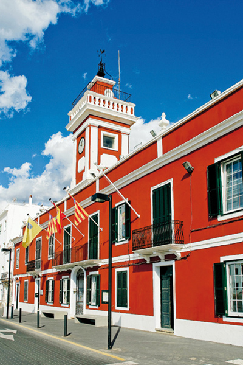
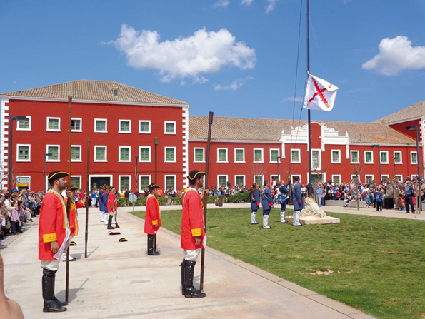

Es Castell, British Inheritance
About two kilometres from Mahón you will find Es Castell, the most easterly town in Menorca and therefore in Spain. Situated near the mouth of the port of Mahón, between Calesfonts and Cala Corb, Es Castell has at the moment about eight thousand inhabitants. The town was born in the shadow of the majestic San Felipe (St. Philip) Castle (1555) and the name (The Castle) originates from this, though San Felipe is now in ruins. A visit to the underground galleries shows how big the fort was and how it was coveted by the great European powers in the XVIII century. The town was founded in 1771 by the English during the second British Domination (1763-1782). Georgetown to use its original name was designed by the Scottish military engineer Patrick Mackellar (1717-1778). The town is built on a grid system typical of military design at the time.
In 1782 an Hispano-French invasion took place that led to the English surrender and the Spanish Domination, signed by the Treaty of Versailles (1783). It was at this time the towns name was changed to the Spanish Real Villa de San Carlos, which was later abbreviated to Villa-Carlos in memory of the reigning monarch Carlos III. Finally in 1984 the name in local usage Es Castell was adopted in reference to the San Felipe castle.
The great esplanade or barrack square is the neuralgic centre of town, surrounded by imposing military buildings and the town hall (1796). The military barracks situated strategically in the centre of town were destined as homes for the troops and the officers. Years ago these majestic buildings, painted red in the English style, impressed, as they do nowadays visitors who visit the square. The straight lines of the urban concept of the town give it a singular distinction, not only in Menorca but in the whole of Spain.
The most important coastal zone of Es Castell was and continues to be without doubt Calesfonts, situated in an ancient valley called ”S´Hort des Milord” (Milord´s orchard). It receives this name from two abundant springs (fountains) that flowed into the cove, situated near the cobbled slope going to the town. It is worth mentioning the importance that Calesfonts gained in building boats, in the little square in the cove. The carpenters built the bots palangrers (long-line fishing boats), that were used for this type of fishing that originated in Menorca; the fishermen from the east of the island used the system in the archipelagos waters.
Next in importance is Cala Corb which, in its origins in the XVIII century used to shelter embarkations that came into the port and became an important provider of water for the English Squadron; a spring that gave a copious supply of water was equipped especially for the purpose. Cala Corb still has the enchantment of the past, it seems that time here has passed more slowly and there is an ambience of “yesterday”. The intervention of man has so far had less incidence on the physiognomy of the cove. In summer the rocks and the cliffs of Cala Corb are decorated with flowers from the caper plants, and the local residents have maintained the tradition of bathing there to alleviate the heat of the summer weather.
 In the beginning Es Castell was a fishing village. Walking round Calesfonts and Cala Corb we can still see in the caves, the majority of which have been converted into bars and restaurants, the vestiges of fishing and maritime activities. Fishermen practiced both coastal and deep sea fishing and were famous for taking risks and being adventurous, going some distance from the island to fish, even close to the coasts of Algeria. The poor fishermen of Es Castell were exposed to fierce storms and inclement weather and many lost their lives due to the raging seas, many died after the hard daily grind trying to pay for the daily bread to survive.
In the beginning Es Castell was a fishing village. Walking round Calesfonts and Cala Corb we can still see in the caves, the majority of which have been converted into bars and restaurants, the vestiges of fishing and maritime activities. Fishermen practiced both coastal and deep sea fishing and were famous for taking risks and being adventurous, going some distance from the island to fish, even close to the coasts of Algeria. The poor fishermen of Es Castell were exposed to fierce storms and inclement weather and many lost their lives due to the raging seas, many died after the hard daily grind trying to pay for the daily bread to survive.
Cala San Esteban (St. Stephen’s cove) situated just at the entrance to the port of Mahón, was probably named after the arrival here of relics from the first Christian martyr Saint Stephen. These were brought by the priest Orosio to Menorca from Jerusalem, as has been confirmed by the letter written by bishop Severo (418) the first document about Christianity in the Balearic Islands. Cala San Esteban is in the zone of Binissaida. From here you can enjoy a splendid panorama of the mouth of the port. The cove has almost certainly been the site of port activities since time immemorial, and was the closest safe harbour in times of bad weather and long sea journeys. The remains of Roman or mediaeval roads show us the importance of the place that had a splendorous past. Fort Marlborough, built by the British between 1710 and 1726 and named after John Churchill, Duke of Marlborough the most important British general at the time, is also in the cove. The fort is open to visitors, with audiovisual information about British Menorca in the XVIII century.
As far as the Catholic Church and its origins go, we must go back further than the foundation of the town; it was born in the neighbourhood always in the shadow of the San Felipe castle. With the construction of the castle (1555) a chapel was built for religious purposes (1582) for the inhabitants of the interior of the fort as was the custom at the time. Afterwards on the outskirts of the fort a church dedicated to Our Lady of the Rose, as the original inhabitants called it was built, destined for the families of the military personnel in the fort and the predecessor of the present church, a neoclassical structure founded in 1777 during the second English occupation, under the auspices of Our Lady of the Rosary, and the saints, George (from the English side) and Santiago or St. James (From the Spanish).